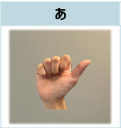
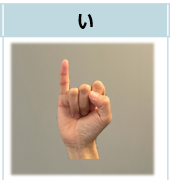
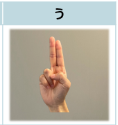
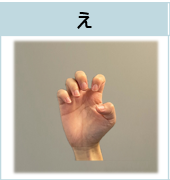
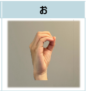

あ
「あ」の指文字
親指だけ伸ばしてその他の指は軽く握ります。これはアルファベットの「a」の指文字と同じです。

い
「い」の指文字
小指以外の指は握り、小指を立てます。これはアルファベットの「i」の指文字と同じです。

う
「う」の指文字
人さし指と中指だけを立てます。これはアルファベットの｢u｣の指文字と同じです。

え
「え」の指文字
指は5本とも第2関節を軽く曲げます。これはアルファベットの｢e｣の指文字と同じです。

お
「お」の指文字
親指とその他の指を丸く握ります。これはアルファベットの｢o｣の指文字と同じです。